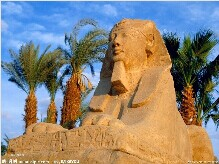

- 埃及国旗
- 埃及国徽
- 埃及标志性建筑
- 埃及地理位置
埃及概况
埃及, 全称阿拉伯埃及共和国。地跨亚、非两洲, 大部分位于非洲东北部
人口概况
9455万（截至2013年）。伊斯兰教为国教，信徒主要是逊尼派，占总人口的84%。科普特基督徒和其他信徒约占16%。[
埃及经济
三分之一以上的职业人口从事农业。耕地面积仅占国土的4.5%, 绝大部分为灌溉地。耕作集约, 年可二熟或三熟, 是非洲单位面积产量最高的国家。主产长绒棉和稻米, 产量均居非洲首位, 玉米、小麦居非洲前列, 还产甘蔗、花生等。非洲重要的石油和磷灰石开采国。炼油工业发达, 其他重要工业部门有食品、纺织、化工、钢铁、机械等。尼罗河和沿海盛产鱼类。主要出口原油、油品、棉花等, 其中原油独占出口总值的一半左右。主要进口农畜产品、机器设备、车辆、化工产品等。苏伊士运河是最重要的国际通航运河。
外交关系
埃及在阿拉伯、北非和国际事务中均发挥着重要作用。开罗现为阿拉伯国家联盟总部所在地，埃前外长穆萨为现任阿盟秘书长。埃现为伊斯兰合作组织主席国。
埃及奉行独立自主、不结盟政策，主张在相互尊重和不干涉内政的基础上建立国际政治和经济新秩序，加强南北对话和南南合作。突出阿拉伯和伊斯兰属性，积极开展和平外交，致力于加强阿拉伯国家团结合作，推动中东和平进程，关注叙利亚等地区热点问题。反对国际恐怖主义。倡议在中东和非洲地区建立无核武器和大规模杀伤性武器区。重视大国外交，巩固同美国关系，加强同欧盟、俄罗斯等大国关系，积极发展同新兴国家关系。在阿盟、非盟、伊斯兰合作组织等国际组织中较为活跃。21世纪初，埃及已与165个国家建立了外交关系。
经贸往来
2006年11月,埃及宣布承认中国完全市场经济地位。2008年以来，两国政府积极推动双方企业扩大经贸合作，双边贸易额持续保持增长态势。2012年，双边贸易额95.4亿美元，同比增长8.4%，其中中方出口额82.2亿美元，同比增长12.9%，进口额为13.2亿美元，同比下降13%。中国向埃及主要出口机电产品和纺织服装等，自埃及主要进口原油、液化石油气和大理石等。